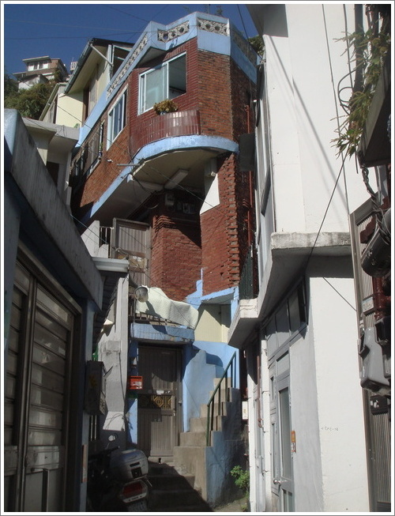

R에게 (제목/가제)
우리는 누가 어디로 왜 갔는가가 그리 중요하지 않다.
그러나 나는 가끔 R을 생각한다. 그가 어디에 있는지, 어떻게 지내는 지, 어디에 있는지 궁금하다.
R을 기억하는 한 지인을 안양에서 만나야 한다.
나는 그에게 R에 대해 물어볼 참이다.
To R (Title/Song title)
It is not important to us who went where. However, I do think about R from time to time. I wonder: where did he go? How is he? Where is he? I must meet a person who is also an acquaintance of R in Anyang. I will ask him about R.
2009-01-08
saptap.egloos.com 에서 옮김